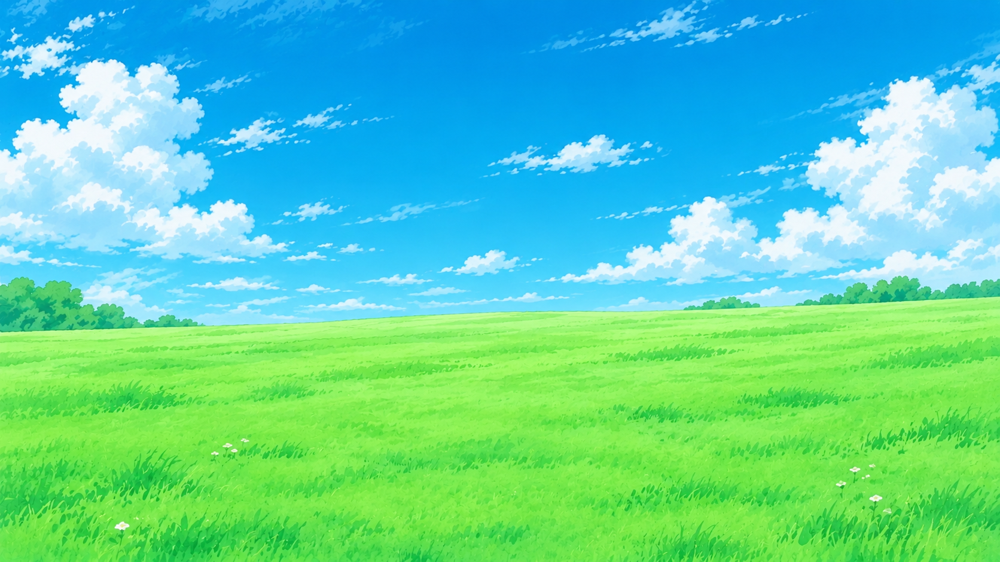

İnternet yoxdur
dino://offline
İnternet yoxdur
Bunu sınayın:
şəbəkə kabellərini, modemi və routeri yoxlayın
— və ya sadəcə bir az dincəlin.
ERR_INTERNET_DISCONNECTED
🌿 Başla
Səsi aktiv etmək üçün bir dəfə klikləyin
🎵 musiqi
💤 xoruldama
Tam ekran